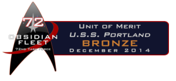
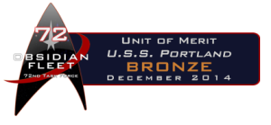

USS Portland - NCC40424

"In the end, we will remember not the words of our enemies, but the silence of our friends"
Martin Luther King
The USS Portland (NCC-40424) is an award-winning Star Trek RPG set in 2392, over 10 years after the events of Voyager and Deep Space Nine. While the Dominion War may be over, the quadrant is still not a safe place and there are many threats to the Federation and adventures to be had.
The Portland is a Miranda Class starship, commanded by Captain Alenis Meru. The aging ship has been upgraded many times, allowing it to remain up to date long after its designers had thought was possible.
The USS Portland is part of Obsidian Fleet, Task Force 72, Task Group 72-A "Grey Wolves"
Our goal here is simply to have fun, explore and develop our characters, and tell cool and interesting stories together.
 Captain Alenis Meru, Commanding Officer USS Portland
Captain Alenis Meru, Commanding Officer USS Portland
 Commander Timothy Rouse, Executive Officer USS Portland
Commander Timothy Rouse, Executive Officer USS Portland
Lieutenant-Commander Tyrlai Zade, Second Officer USS Portland


 
